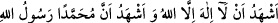

Dua eder ve der ki:
“Allah hepinizin muradını verdi, maksatlarınıza eriştiniz”
Onlar da hemencecik sıhhat bulup
Onun duası ile neşelenerek yürür giderlerdi.
Sen de bunca âfete uğradın, tecrübeler edindin.
Padişah meşrepli erlerden sıhhat buldun.
Topallığın kaç defa düzeldi.
Canın kaç kere gamdan, sıkıntıdan kurtuldu.
“Ölüleri benim iznimle” diriltip kabirlerinden dışarıya diri olarak “çıkarıyordun”
Denildi ki bu şekilde Hz. Nuh’un oğlu Sam’ı, başka iki adamı ve bir cariyeyi diriltti.[67]
Kelbî demiştir ki: Îsâ (a.s.) “Yâ Hayyu yâ Kayyûm” (Ey diri olan, ey herşeyi koruyup
gözeten) diyerek ölüleri diriltirdi. Bu söz muhakkık âlimlere göre ism-i âzamdır.
“Hani İsrâiloğulları’na apaçık deliller” aşikar mûcizeler “getirdiğin ve onlardan
inkar edenlerin “Bu, apaçık bir sihirden başka bir şey değildir!” dedikleri vakit seni
onlardan korumuştum.” “Yani, sana kötülük yapmak isteyen yahûdîlerin sana
saldırmalarına mâni olmuştum.
Yahûdîlerden inkar edenler, “Senin getirdiğin şey, apaçık sihirden başka bir şey
değil” diyerek red ve inkar ettiler. Böylece küfür hastalığına saplanıp kaldılar ve îman
ilacıyla, ilâhî hikmet sahibi uzman bir doktorun eliyle tedaviyi kabul etmediler.
Şiblî’den şöyle bir hikâye nakledilir: İmam Şiblî, bir gün hastalanır ve hastaneye
kaldırılır. Sonra da vezir Ali b. Îsâ, halifeye bir mektup yazarak durumu haber verir.
Durumu öğrenen halife, Şiblî’yi tedavi etmek üzere baş tabibini gönderir. Fakat
doktorun tedavisi başarılı olmaz. Bunun üzerine doktor Şiblî’ye: “Vallahi, eğer senin
şifaya kavuşmanın, benim bedenimden bir parça et kesmeye bağlı olduğunu bilsem bu
bana hiç zor gelmez!” der. Şiblî: “Benim şifam bundan daha basit bir şeye bağlıdır!”
der. Bunun ne olduğunu soran doktora Şiblî’nin cevabı şöyle olur:
–“Zünnârını
kesmen!
(müslüman
olman)”
Doktor
hemen
“
” diyerek müslüman olur. Halife durumdan haberdar
edilince ağlar ve “Güya biz doktoru hastaya gönderdik, meğer hastayı doktora
göndermişiz.” der.
Yâfiî de demiştir ki: “İşte bu o hâzik (uzman) doktorun ta kendisidir. Onun sahip
olduğu hikmet, hastalıkları ortadan kaldıran hikmet türündendir.
Bu hususta ben de derim ki:
“Hastalansa bedeni, bir gönül doktorunun,
Doktora doktorluk mu? Asıl tabiplik onun!
De ki; onlar ledünnî ilm ü hikmete sahip,